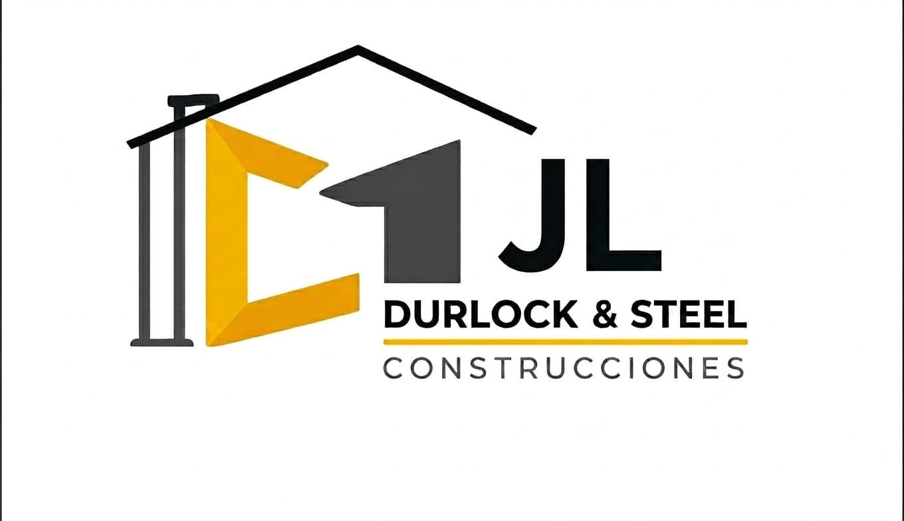
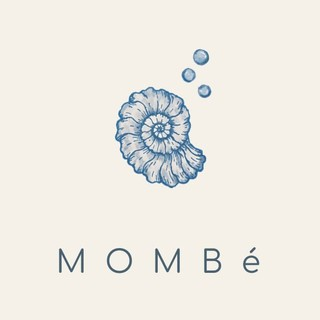

Si tu negocio no aparece en Google, no existe
Mientras lo pensás, probablemente ya hay clientes que encuentran a tu competencia. ¿Vos querés perderlos?
✓ Demo gratuita • ✓ Sin compromiso • ✓ 30 minutos
Proyectos desarrollados
Negocios que ya dieron el paso hacia una presencia digital que trabaja para ellos.
AR Estética Vehicular
Mantenimiento y estética vehicularDel boca a boca a una web con sus servicios y un camino directo a WhatsApp.

JL Construcciones en Seco
Construcción en secoDe trabajar por recomendación a una web con sus servicios, una galería de trabajos y contacto directo.

Mombé
Textiles artesanalesEn desarrollo: hoy estamos en el paso 2, diseño y estrategia.
Servicios AF
Servicios profesionalesDe una página en Lovable a una web completa, con perfil profesional y servicios más claros.
Un proceso directo, pensado para vender
No arranco diseñando. Arranco preguntando. Así la web no queda linda y vacía, queda con un objetivo claro.
Diagnóstico
Hablamos de tu negocio en profundidad: qué vendés, a quién, y por qué hoy no te encuentran.
Diseño y Estrategia
Traduzco ese diagnóstico en una web pensada para generar confianza y conversión, no solo para verse bien.
Resultados
Tu web lista, encontrable, y trabajando para captar clientes.
La demo gratuita es así
Coordinamos y hablamos de tu negocio
Elegimos la forma que más te convenga, sincrónica o asincrónica, para que me cuentes qué vendés, a quién y por qué hoy no te encuentran. No hablamos de diseño.
Elegir día y horario para una reuniónArmo una propuesta
Te muestro cómo podría quedar tu sitio web con la información disponible públicamente. Y si no necesitás web, también te lo digo. Sin vueltas.
Si avanzamos, hablamos del proceso
Te cuento cómo es el trabajo, los plazos y la inversión.
"No es una venta disfrazada de consulta. Es una conversación real para saber si podemos trabajar juntos o no."
¡Hola! Soy Sabri
Hago páginas web con un paso previo que para mí es clave: el diagnóstico. Primero entiendo tu negocio y recién después diseño. Así la web no queda linda y vacía, queda con un objetivo claro. Trabajo online o, si estás en Pocito o en el Gran San Juan, en persona y con cita. Soy estudiante de Informática y trabajo con honestidad: te muestro cada avance y te explico cada decisión.
Si querés mejorar tu presencia online, hablemos.
Preguntas frecuentes
Dudas que pueden surgir antes de reservar tu demo gratuita. Si no encontrás tu pregunta, escribime por WhatsApp y te la respondo personalmente.
¿Cuánto tarda el proyecto?
Solemos tener la demo lista en 2 días. El proceso tarda entre 1 y 2 semanas desde que confirmamos el diagnóstico. Incluye diseño, desarrollo, pruebas y despliegue. Si necesitás cambios después de la entrega, el servicio de soporte se cotiza aparte.
¿Qué incluye exactamente?
- Diagnóstico (30 minutos de conversación conmigo)
- Diseño personalizado para tu negocio
- Dominio gratis por 12 meses
- Alojamiento gratis por 12 meses
- Optimización para Google
¿Cómo es el proceso de trabajo?
Puede ser sincrónico o asincrónico. Coordinamos la demo, hablamos de tu negocio, te cuento qué necesitás y decidimos si avanzamos. Si avanzamos, trabajamos en iteraciones: te muestro avances, vos me das tu devolución, ajustamos y listo.
¿Después puedo escalar la web?
Sí. La web está hecha para escalar. Si después necesitás más funcionalidades, podemos hablar. O si preferís otro desarrollador, tenés acceso total al código y dominio.
¿Necesito saber de tecnología?
No. Te hago una web pensada para que la entiendas vos. Si necesitás cambiar algo después, me escribís y lo hacemos juntos.
¿Cómo es el proceso de diagnóstico?
Online: sincrónico por llamada o videollamada, o asincrónico por WhatsApp o correo electrónico. Presencial: con cita, en tu negocio, si estás en Pocito o en el Gran San Juan. En cualquier caso, se trata de un intercambio de información para entender tu negocio y tus necesidades.
¿No encontraste tu pregunta? Escribime por WhatsApp y hablamos directamente.